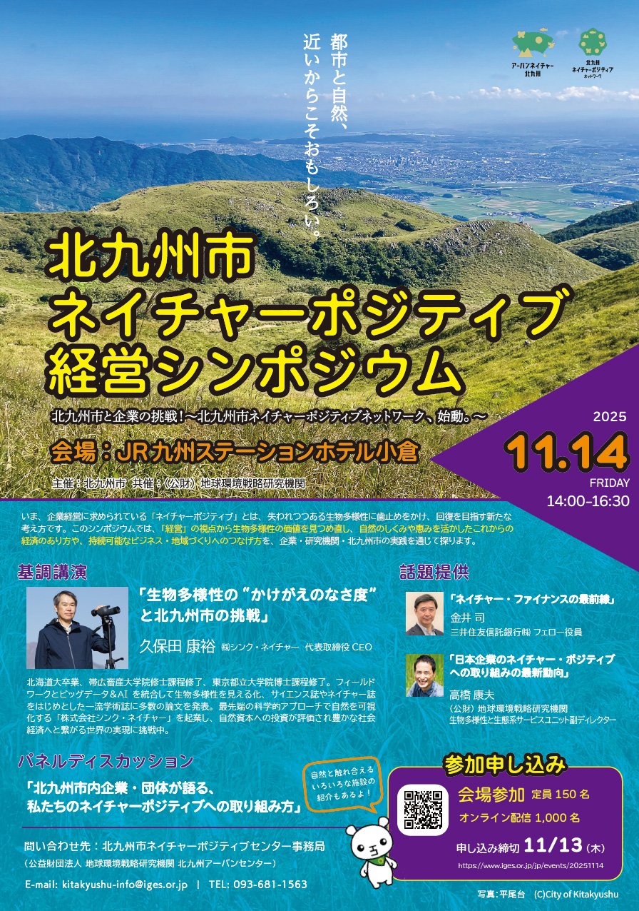

イベント内容
本シンポジウムでは、自然を回復軌道に乗せるため、生物多様性の損失を止め反転させる「ネイチャーポジティブ」の考え方を、企業経営の視点から、産業都市である北九州市に焦点を当てて見ていきました。
また、自然のしくみや恵みを活かした経済のあり方や持続可能なビジネス・地域づくりについて、企業・研究機関・行政の実践事例をもとに考えました。
お気軽にお問合せください
（該当なし）
（該当なし） （該当なし）（該当なし）
（該当なし） （該当なし）（該当なし）
（該当なし） （該当なし） （該当なし） （該当なし） （該当なし） （該当なし） （該当なし） （該当なし） （該当なし） （該当なし） （該当なし） （該当なし） （該当なし） （該当なし） （該当なし） （該当なし） （該当なし） （該当なし）（該当なし）
（該当なし） （該当なし） （該当なし） （該当なし） （該当なし） （該当なし） （該当なし） （該当なし） （該当なし） （該当なし） （該当なし） （該当なし） （該当なし）（該当なし）
（該当なし） （該当なし）（該当なし）
（該当なし） （該当なし） （該当なし） （該当なし） （該当なし） （該当なし） （該当なし） （該当なし）